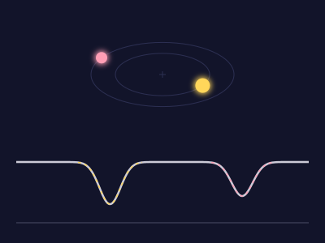
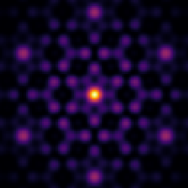
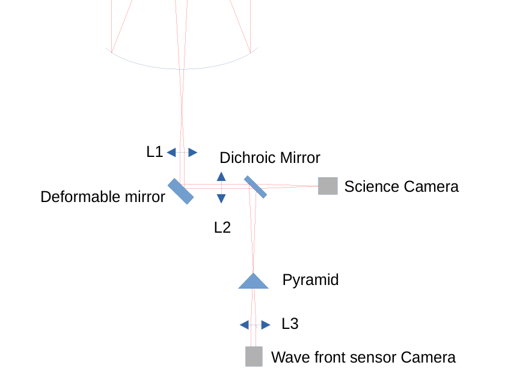

Characterization of the NIRPS Guiding Camera for Close Visual Binaries
How faint a companion star can be and still be seen by the NIRPS guiding camera, and how much of its light leaks into the fibre.
Research, data analysis, programming and university work.
How faint a companion star can be and still be seen by the NIRPS guiding camera, and how much of its light leaks into the fibre.

A neural network built from scratch in Python and NumPy that tells elliptical galaxies from cigar-shaped ones.

Measuring the velocities of both stars in HD 195521 with a two-Gaussian model and MCMC.

Simulations of how aperture shape, interferometer layouts and atmospheric seeing set the image of a star.

A simple adaptive optics system for the Euler Telescope, and a pair of prisms that undoes the colour spread caused by the atmosphere.

Finding the stars in a telescope image, placing them on the sky, and comparing their counts with Pan-STARRS catalogue fluxes.
Timing exoplanet transits for ESA's Ariel mission, in an open project anyone with a telescope can join.